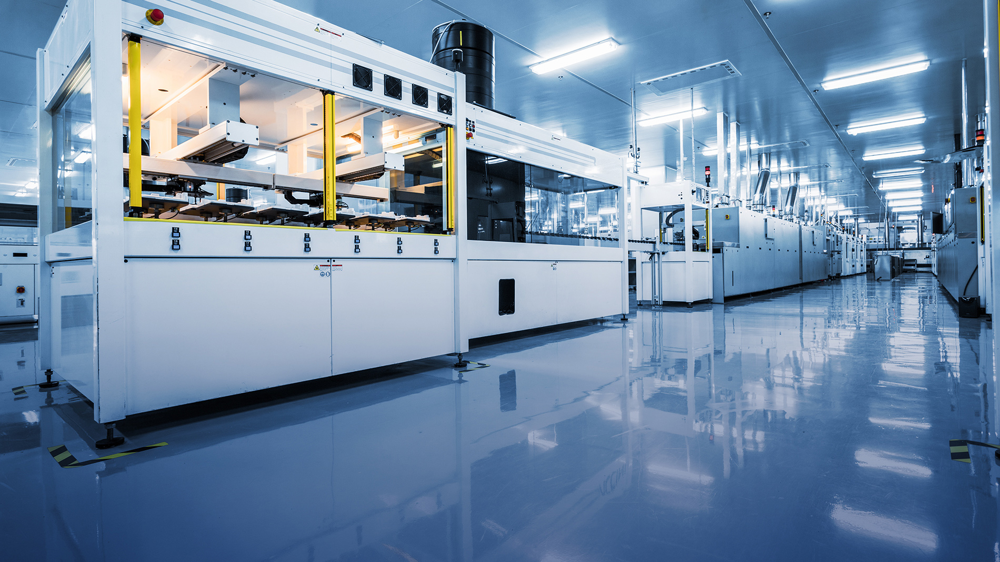

台灣機械設備6月出口 連六個月雙位數成長
發布日期 28, 03, 2021
機械是由機械結構（機構）組成，機械結構再由機械元件（構件）組成，是機械工程學的一個基本概念。機械就是能幫助人們節省工作難度或省力的工具裝置。有一些機械單純轉換力的大小或（及）方向，被稱為簡單機械。而複雜機械就是由二種或二種以上的簡單機械構成。
機械是一種人為的實物構件的組合，各部分構件必須實現相互的、單一的、規定的剛體運動，把施加的能量轉變為最有用的形式，或轉變為有效的機械功。 機械是機構和機器泛稱。機器具備機構的特徵外，還必須具備第三個特徵：即能代替人類的勞動，以完成有用的機械功或轉換機械能，故機器是能轉換機械能或完成有用的機械功的機構。機器是帶有驅動裝置的機構。
機械是一種人為的實物構件的組合，各部分構件必須實現相互的、單一的、規定的剛體運動，把施加的能量轉變為最有用的形式，或轉變為有效的機械功。 機械是機構和機器泛稱。機器具備機構的特徵外，還必須具備第三個特徵：即能代替人類的勞動，以完成有用的機械功或轉換機械能，故機器是能轉換機械能或完成有用的機械功的機構。機器是帶有驅動裝置的機構。
※此區為圖文編輯器，可由後台新增/編輯，圖片寬高不限，建議寬度1280px
